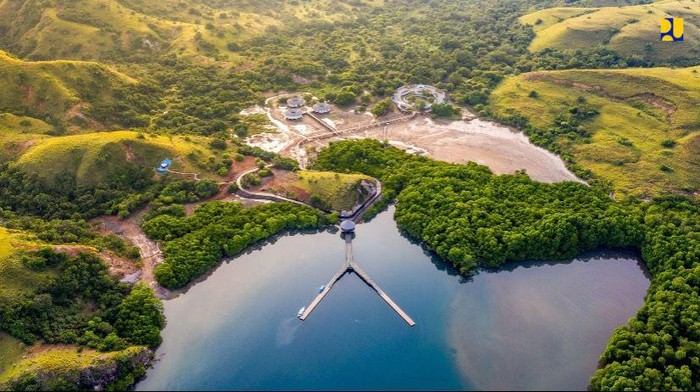
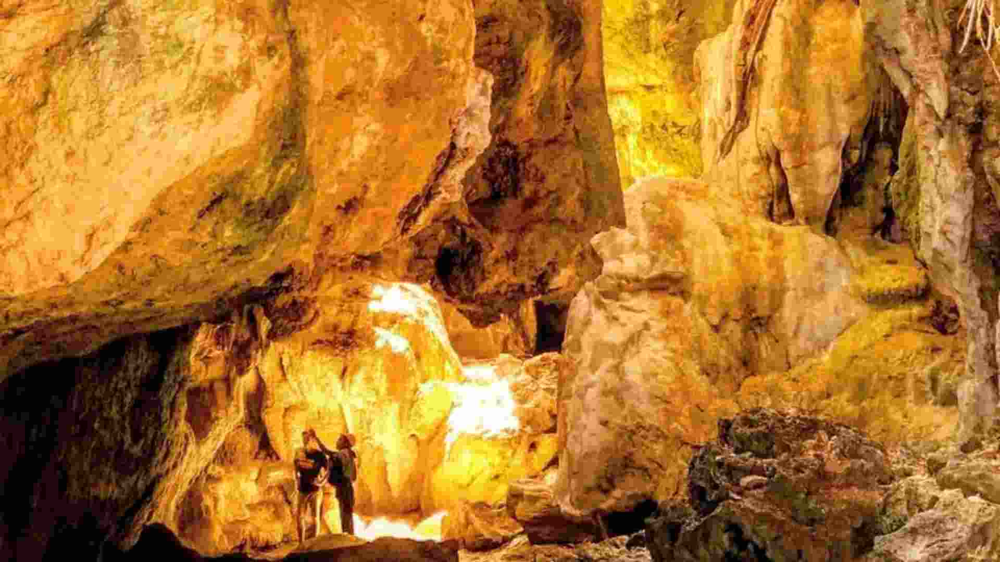
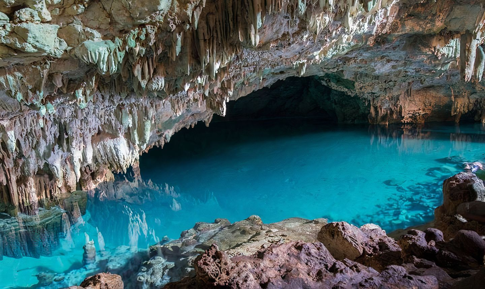
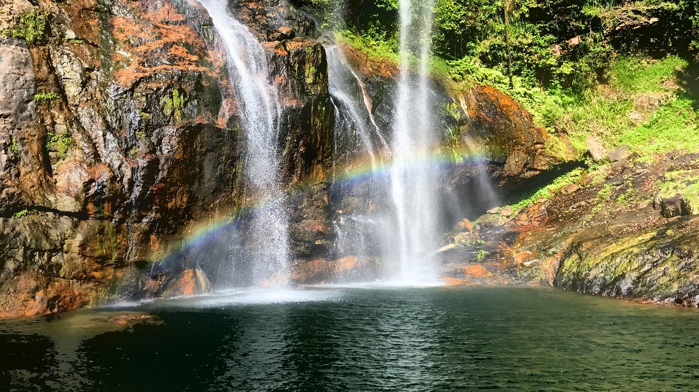
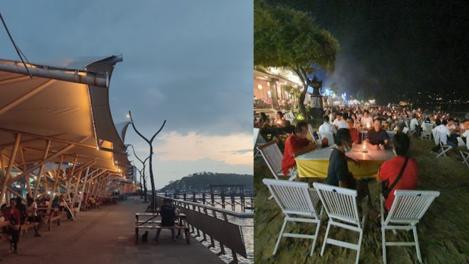

Gerbang Taman Nasional Komodo
Kawasan ini terdaftar sebagai Situs Warisan Dunia UNESCO sejak 1991. Terdiri dari Pulau Komodo, Rinca, Padar, dan sejumlah pulau kecil di sekitarnya.
Discover Flores through authentic places, culture, and experiences with Yohanes Agung.
Kawasan ini terdaftar sebagai Situs Warisan Dunia UNESCO sejak 1991. Terdiri dari Pulau Komodo, Rinca, Padar, dan sejumlah pulau kecil di sekitarnya.
Labuan Bajo dikenal sebagai kota senja. Titik pandang seperti Bukit Cinta, Puncak Amelia, dan Puncak Silvia menawarkan panorama pulau dan laut terbuka.
Menjelajah dengan kapal phinisi selama beberapa hari, menyelam, dan singgah ke pulau-pulau. Padar dengan perbukitan savananya menjadi favorit baru.
Informasi destinasi dirangkum dari sumber publik (indonesia.travel & Wikipedia). Jarak bertanda “±” adalah perkiraan dari sumber.
Perbukitan bergulir dan pegunungan vulkanik dengan padang savana yang menjadi panorama ikonik Labuan Bajo.

TN KomodoRumah bagi komodo atau ora. Kawasan ini menjadi daya tarik utama dan situs warisan dunia, di darat maupun bawah laut.

GoaDitemukan tahun 1951 oleh arkeolog Belanda Theodor Verhoeven. Konon Labuan Bajo pernah berada di bawah laut; batu-batu di dalamnya memantulkan cahaya.

GoaDanau di dalam gua dengan air biru dan sinar matahari yang jatuh langsung. Stalagmit di dalamnya menambah kesan alami.

Air TerjunJalur menuju air terjun ngarai (canyon) yang bisa ditelusuri sebagai bagian dari petualangan darat.

KulinerPusat makanan lokal Labuan Bajo, tempat mencicipi hidangan laut dan masakan setempat di tepi pelabuhan.
Nama paket, durasi, harga, dan inklusi adalah contoh struktur. Data final harus diambil dari sumber resmi.
| Paket | Durasi | Mulai dari | Inklusi |
|---|---|---|---|
| Open Trip Komodo Contoh | 1 hari | Rp — | Kapal, pemandu, tiket kawasan |
| Liveaboard Phinisi Contoh | 2–3 hari | Rp — | Kabin, makan, dive guide |
| Private / Custom Trip Contoh | Fleksibel | Rp — | Sesuai permintaan |
Penerbangan langsung Transnusa menghubungkan Labuan Bajo dengan Denpasar, Kupang, Ende, dan Mataram. Dengan penerbangan lanjutan, tersedia koneksi ke Kalabahi (Alor), serta Bajawa, Sikka, Manggarai, dan Larantuka via Ende, Kupang, Maumere, Ruteng, dan Tambolaka.
Perjalanan darat lintas Flores bisa dilakukan namun memakan biaya dan waktu. Bus dari Denpasar (Bali) menuju Bima (Sumbawa), lalu dilanjutkan ke Sape, dan menyeberang dengan feri ke Labuan Bajo.
Liveaboard melayani rute Komodo dan Flores sesuai paket. Kapal PELNI: Tilongkabila dari Makassar; Leuser dari Tanjung Perak (Surabaya) atau Benoa (Bali); Wilis dari Makassar via Larantuka menuju Labuan Bajo.
Ojek (taksi motor), mobil agen travel, bus, dan bemo (van lokal dengan sopir-pemandu). Pastikan memesan dari sumber resmi; hotel biasanya dapat membantu.
Sumber: indonesia.travel, Wikipedia, PELNI — menunggu verifikasi operator.
Slot di bawah disediakan untuk foto asli. Tidak ada foto stok yang dipakai agar tidak menyesatkan.
[PLACEHOLDER: kutipan tamu]
— Nama, asal
[PLACEHOLDER: kutipan tamu]
— Nama, asal
[PLACEHOLDER: kutipan tamu]
— Nama, asal
[PLACEHOLDER: bio singkat Yohanes Agung — latar belakang, daerah asal, dan pendekatan memandu.]
[PLACEHOLDER: pengalaman, bahasa yang dikuasai, dan lisensi pemandu.]
Labuan Bajo dapat dicapai lewat udara (Bandara Komodo), darat lintas Flores, maupun laut bersama liveaboard atau kapal PELNI. Rincian ada di bagian “Cara ke Sana”.
Kawasan ini terdaftar sebagai Situs Warisan Dunia UNESCO sejak 1991 dan menjadi rumah bagi komodo (ora), baik di darat maupun bawah laut.
Ojek (taksi motor), mobil agen travel, bus, dan bemo (van lokal dengan sopir-pemandu). Pesan dari sumber resmi atau melalui hotel Anda.
Sumber mencatat 3–7 Oktober 2026 di Nusa Tenggara Timur. Konfirmasi selalu ke penyelenggara resmi karena jadwal dapat berubah.